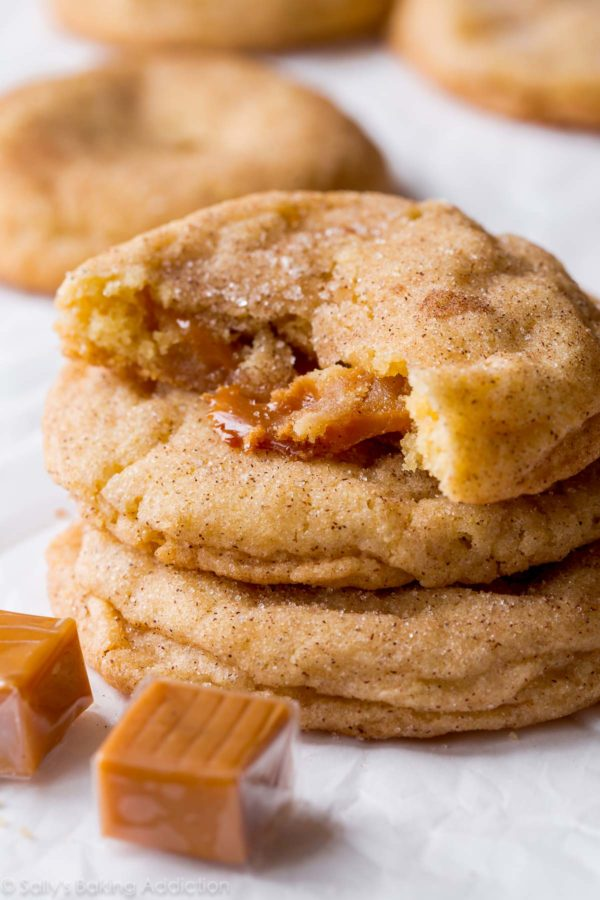

Chapter 03
Recipes
Chocolate Chip |
Snickerdoodle |
Definitions
Chocolate Cookies
Ingredients
- Eggs
- Tuscan Butter
- Florentine Flour
Method
- Crack eggs, beat into sugar
- Beat butter, add to egg/sugar mixture
- Pour in bowl, place in oven

Back to Top
Snickerdoodle
Ingredients
- Eggs
- Butter
- Flour
- Turbinado Sugar
Method
- Add sugar and flour together
- Cream the butter
- Stir together. Place in oven.

Back to Top
Definitions
- Tuscan Butter
-
Rich, creamy butter from the moutains of
Tuscany.
- Florentine Flour
-
Flour, hand-milled, in small batches in Florence.
Back to Top